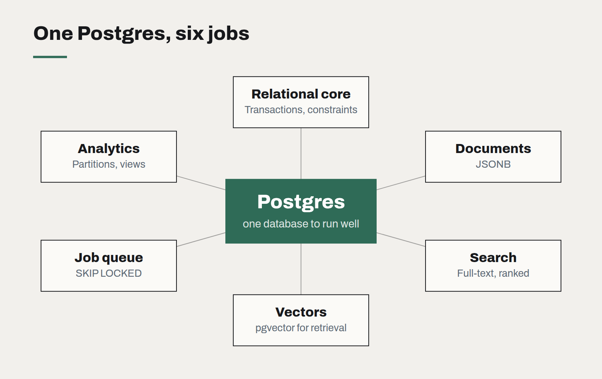

Postgres is the default database, and it should be
Documents, search, queues, vectors for AI retrieval — one well-run Postgres now covers what used to take four products. The reasons to add a second database are fewer than they were.

When we start a new system, the database question is usually settled in one line: Postgres, unless there is a specific reason otherwise. That line has become easier to write every year, because the list of specific reasons keeps getting shorter.
This is not brand loyalty. It is a judgement about operational cost. Every additional data store in a system is another thing to back up, secure, monitor, upgrade and keep consistent with the others. For the size of organisations we mostly work with, the cheapest architecture is usually the one with the fewest moving parts, and Postgres has quietly absorbed a remarkable number of jobs that used to need a separate product.
What one database can now do
- Relational data, obviously, with transactions, constraints and a mature query planner. The foundation everything else rests on.
- Documents. JSONB columns store and index semi-structured data well enough that a separate document database is rarely justified. Keep the structured core in columns and the variable parts in JSON.
- Search. Built-in full-text search handles most in-application search — product catalogues, knowledge bases, support tickets — with ranking and language-aware stemming.
- Vectors. The pgvector extension stores embeddings and runs similarity search next to the rows they describe. For AI retrieval at business scale, keeping vectors beside the source records means permissions, joins and freshness come for free.
- Queues and jobs. A table with
SKIP LOCKEDmakes a perfectly serviceable job queue for thousands of jobs a minute, with the huge advantage that enqueuing a job can be part of the same transaction as the data change that caused it. - Time-series and analytics at moderate volume, using partitioning and materialised views.

Why it matters more for AI work
The case for Postgres got stronger when retrieval became central to AI features. A separate vector database means copying data out of the system of record, keeping two stores in sync, and re-implementing access control in the second one. With vectors in Postgres, a retrieval query can filter by tenant, permission and date in the same statement that ranks by similarity. Deleting a customer's data deletes their embeddings too.
At very large scale — hundreds of millions of vectors with tight latency targets — a specialised engine may be worth its operational cost. Most businesses are several orders of magnitude away from that line.
When to add something else
We add a second data store when one of these is true and can be demonstrated, not anticipated:
- Write or read volume that a well-tuned Postgres, with read replicas, genuinely cannot handle.
- A workload with fundamentally different access patterns, such as large-scale analytics over years of events, where a columnar warehouse is far more efficient.
- A caching need that a simple in-memory store solves more cheaply than database tuning.
Run it properly
The flip side of relying on one database is that it has to be run well. Use a managed service unless you have a strong reason not to. Test restores, not just backups. Watch slow queries weekly. Keep migrations in version control and review them like code. A single, well-run Postgres is one of the most reliable components in modern software. A neglected one is a single point of failure. The difference is discipline, not technology.
Choosing a frontend framework is mostly choosing a team
The technical differences between mainstream frameworks have narrowed. What still differs is who you can hire, how long the code will be supported, and how much of it you actually need.
Observability for teams of five
You do not need a platform team to know what your software is doing in production. Four signals, one dashboard and a rule about alerts will cover most of what a small team needs.
Static first: why our own site ships as plain files
No server, no database, no framework runtime — and pages that load before you finish blinking. Static generation is the most underrated architecture for most business websites.